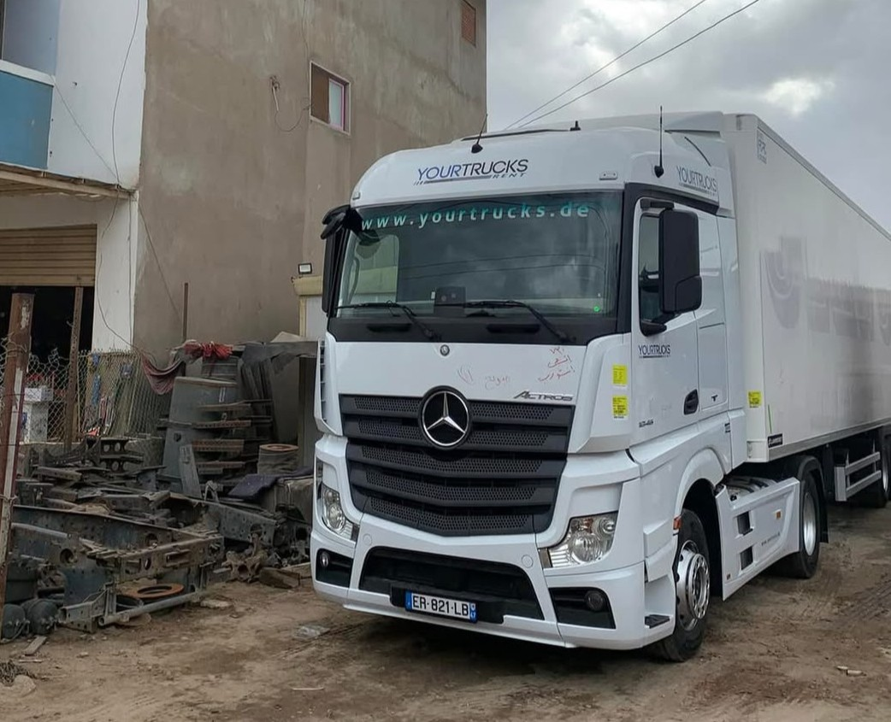
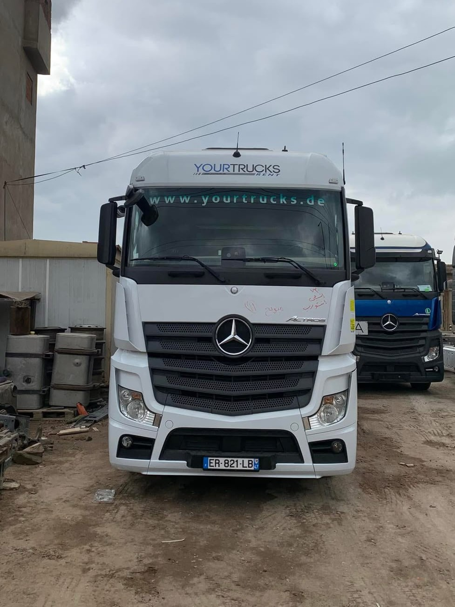
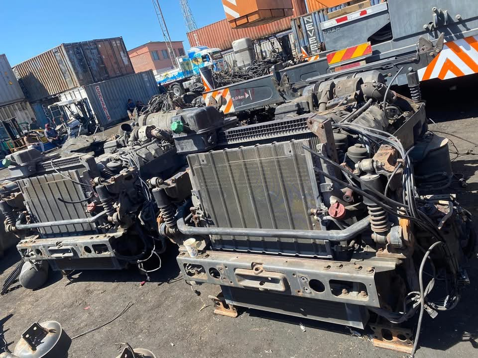

أجود أنواع الشاحنات والمعدات الثقيلة، وقطع الغيار الأصلية والشاسيهات بحالة الفبريكة.
اختر الفئة لعرض القطع والمعدات المتاحة في المعرض
معاينة حية لأحدث الشاحنات والمعدات الواصلة حديثاً من ألمانيا


فرع الشونة والمعرض بمركز كفر الزيات